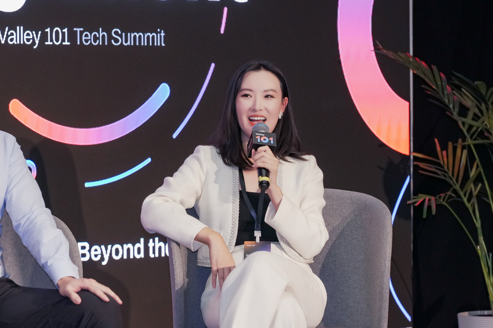
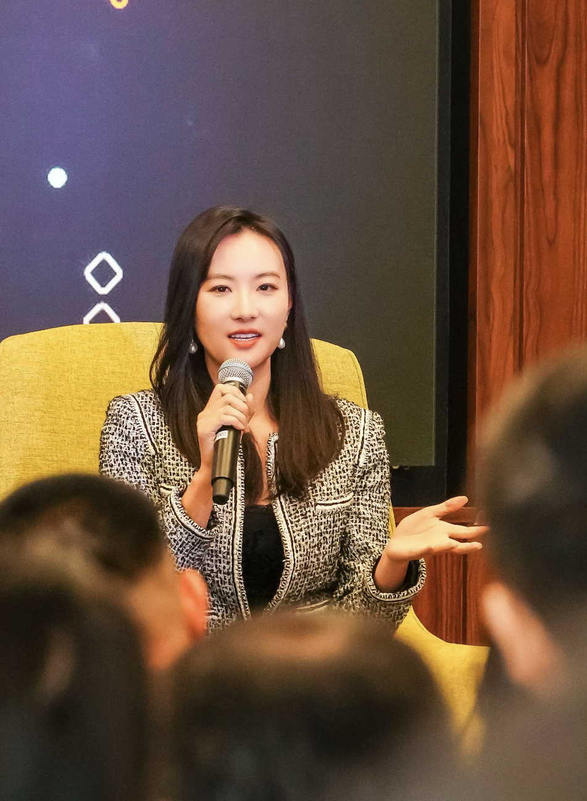

I invest in AI infrastructure. My edge is having operated inside three layers of the stack before I started.
Before my current role, I co-founded an AI company backed by Sequoia-SourceCode Capital, served as acting CFO of an energy-backed AI infrastructure company developing power assets in Texas, and built HP's Asia e-commerce division from scratch to $200M in revenue.
Access to unit economics from private infrastructure companies — GPU utilization rates, inference margins, and capex payback periods that never appear in public filings.
On-the-ground visibility into advanced packaging, memory, and optical component supply chains across Taiwan, Japan, and South Korea — the bottlenecks that determine the pace of AI infrastructure buildout.
Having developed power assets for AI infrastructure in Texas and co-founded an AI company, I understand infrastructure economics from the inside — not just the balance sheet.
A 100-year pattern has governed every major information industry — telegraph, telephone, mobile data. Each time, wealth flows in three waves: infrastructure first, then compression, then gatekeepers. AI is running the same script. The question is which wave you're positioned for.
2025 was a great year for performance. It was also the year I realized how much I had still missed — and why the framework shift AI forces on investors is more uncomfortable than most will admit.

